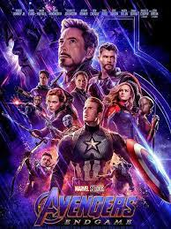

3 REKOMENDASI FILM MARVEL TERBARU
1. Spider-Man No Way Home
Spiderman No Way Home mengisahkan tentang kegelisahan Peter Parker yang diperankan Tom Holland karena difitnah. Mysterio, yang diperankan oleh Jake Gyllenhaal adalah orang yang memfitnah Parker dan akhirnya mati terlebih dahulu sebelum masalah bisa diselesaikan. Meski sudah dinyatakan meninggal dunia, namun fitnah yang diberikan Mysterio kepada Peter terus berkembang ke publik dan membuat munculnya spekulasi miring kepada Peter Parker. Tudingan demi tudingan yang membongkar identitas Parker pun kian memanas karena media setempat, yakni koran The Daily Bugle yang dipimpin J Jonah Jameson (JK Simmons) ikut memberitakan Parker dan menyebutkan sebagai dalang dari pembunuhan Mysterio. Karena tudingan yang ditujukan padanya itu, Parker pun mulai kehilangan privasi danmerasa tersudutkan. Bahkan, rumahnya setiap hari selalu menjadi objek amatan media dan masyarakat setempat. Meski tak ada kaitannya dengan hubungan Parker dan MJ (Zendaya), namun secara tak langsung rumor yang memanas di publik memengaruhi hubunga mereka yang masih berusia seumur jagung. Parker pun kemudian mulai mencari ide untuk bisa meluruskan masalah yang kian berkembang itu. Ia kemudian membuka lintas semesta dan mendatangi Doctor Strange (Benedict Cumberbatch) yang pernah sama-sama berjuang melawan Thanos. Parker meminta bantuan Strange agar membuat masyarakat lupa jika dirinya adalah Spiderman. Strange sebelumnya sudah pernah diberi peringatan oleh Wong (Benedict Wong), tetapi dirinya tetap memilih membantu Peter Parker dan mulai merapalkan mantra. Baru akan dibantu, Parker justru berubah pikiran dan membuat strange marah dan malah salah dalam merapal mantra. Kesalahan ini membuat batas lintas semesta terbuka dan menarik sejumlah pihak dari semesta lain masuk dalam semesta yang saat ini dihuni Peter dan Strange. Makhluk-makhluk tersebut kemudian memburu Peter Parker, padahal sebelumnya mereka tidaklah mengenal satu sama lain. Doctor Strange kemudian memerintahkan Parker mengumpulkan mahluk-mahluk tersebut untuk nantinya dikembalikan ke alam asli mereka. Namun dalam perjalannya, tentu saja tidak semudah itu. Parker terus mendapatkan tantangan demi mengembalikan semesta yang seharusnya.
2. Doctor Strange in the Multiverse of Madness

Doctor Strange 2 mengisahkan perjuangan Stephen Strange (Benedict Cumberbatch) menghadapi berbagai kejadian aneh akibat pintu lintas semesta yang terbuka pasca kejadian di Spider-Man No Way Home. Hal itu dimulai ketika Strange mengalami serangkaian penglihatan saat dirinya tidur. Dalam penglihatan tersebut, sosok yang mirip dirinya tengah berusaha kabur dan melawan monster di sebuah semesta yang aneh. Ia tak sendiri. Sosok serupa Strange itu bersama dengan seorang gadis dan mereka berusaha melewati berbagai pijakan yang berpindah-pindah untuk menghindari monster tersebut. Semua bermula saat Doctor Strange terus mengalami mimpi aneh. Salah satunya adalah saat dirinya sedang berusaha melarikan diri dari monster di sebuah semesta yang asing. Dalam mimpinya, ia bersama dengan seorang gadis, dan terlihat melewati pijakan yang terus berpindah untuk menghindar. Sampai di ujung jalan, mereka bertemu dengan benda mirip dengan The Book of Vishanti. Ia dihadapkan pada dilema, harus mengambil buku tersebut guna mengalahkan monster, atau menyelamatkan sang gadis kecil. Ia kemudian terbangun. Mimpi aneh terus ia alami, dan berbagai sosok muncul dari mimpinya yang berbeda-beda. Semua selalu berkaitan dengan dirinya pada satu dunia yang asing dan tak dikenali, menghadapi masalah, dan terus berlari. Bagaimana kisah selanjutnya? Well, akan lebih baik jika Anda menontonnya secara langsung agar lebih seru. Karena jika diteruskan, akan cukup banyak spoiler yang muncul dalam artikel ini.
3. Avengers: EndgameAvengers: EndgameAvengers: Endgame

Avengers: Endgame adalah film pahlawan super Amerika 2019 yang didasarkan pada tim superhero Avengers dari Marvel Comics, diproduksi oleh Marvel Studios dan didistribusikan oleh Walt Disney Studios Motion Pictures. Ini adalah sekuel The Avengers 2012, film 2015 Avengers: Age of Ultron dan film 2018 Avengers: Infinity War, dan film kedua puluh dua di Marvel Cinematic Universe (MCU). Film ini disutradarai oleh Anthony dan Joe Russo, yang ditulis oleh Christopher Markus dan Stephen McFeely, dan menampilkan pemeran ansambel termasuk Robert Downey Jr, Chris Evans, Mark Ruffalo, Chris Hemsworth, Scarlett Johansson, Jeremy Renner, Don Cheadle, Don Cheadle, Paul Rudd, Brie Larson, Karen Gillan, Danai Gurira, Benedict Wong, Jon Favreau, Bradley Cooper, Gwyneth Paltrow, dan Josh Brolin. Dalam film itu, anggota Avengers yang masih hidup dan sekutu mereka berusaha untuk membalikkan kerusakan yang disebabkan oleh Thanos dalam Infinity War. Film ini diumumkan pada bulan Oktober 2014 sebagai Avengers: Infinity War - Part 2.